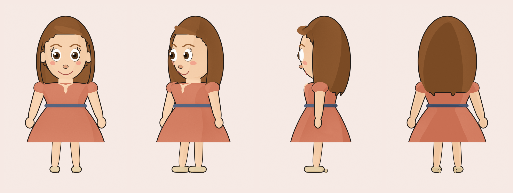

Victoria “Tori” Sterling, Ace’s wife: practical, warm, keeps the family budget. The cartoon is drawn to the same rules as cartoon Ace: short and chunky, about 2½ heads tall, a big head so her face reads on a phone screen. Her own look: long wavy chestnut hair with a side part, lashes, a terracotta dress with a navy belt, and nude low heels.

Same single outline weight as Ace, round joins, darker than any fill. Lashes are three short flicks at the outer corner of each eye, never a full fringe.
About 2½ heads tall, a touch shorter than Ace. Softer, rounder jaw. The hair is one long shape behind the head with a wavy hem at the shoulders, plus a side-swept fringe parted on her right.
The 3D cartoon Tori is built from this sheet with the same cel shading, outline and rig as cartoon Ace: elbows, wrists, the 9-shape mouth set, blink, look and brows.